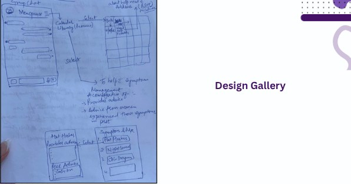
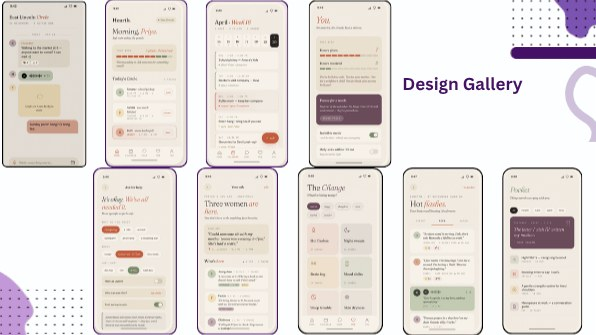
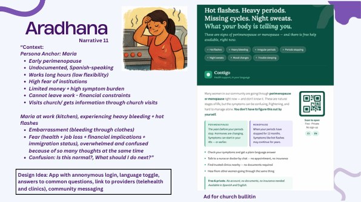
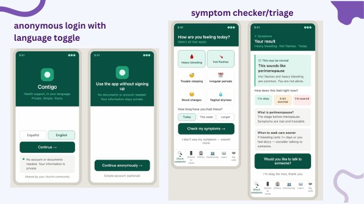
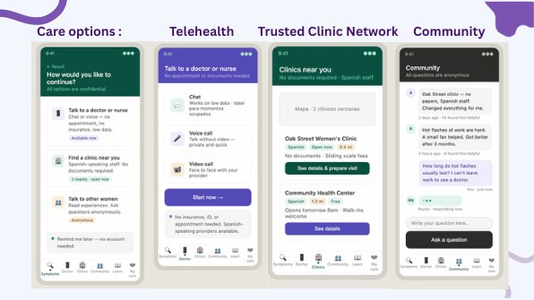
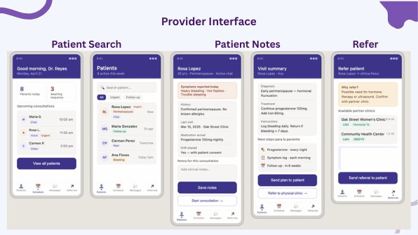
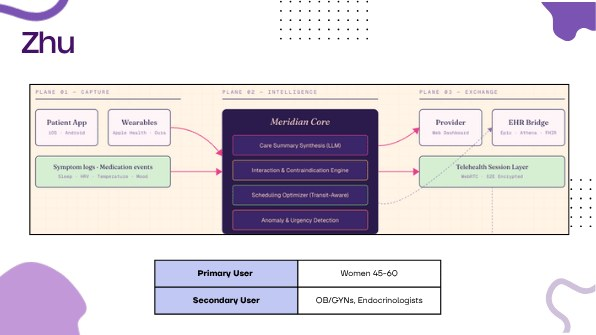
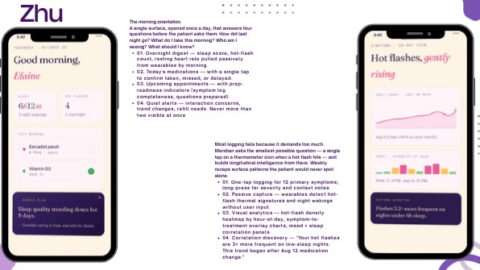
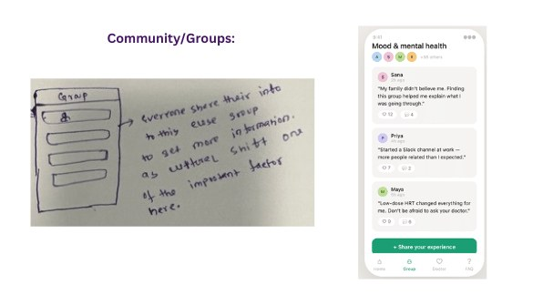
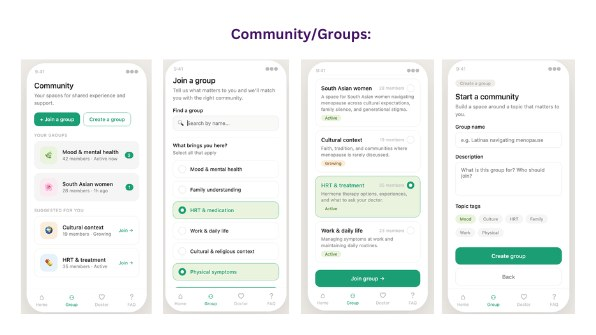

The challenge
Good menopause information is hard to find, both for women going through it and for the clinicians who treat them.
What I did
Led a co-design workshop with women in menopause and guided the team from their narratives to four app concepts, then designed the resident study: baseline survey, focus-group question bank and a two-cohort co-design protocol for an AI training chatbot.
The outcome
Phase 1 surfaced a strong desire for social support and menopause education. Phase 2 is now generating requirements with OB/GYN residents for the chatbot prototype.
The problem
Menopause is a transition nearly every woman goes through, yet good information about it is hard to find, both for the women living it and for the clinicians who treat them.
Women describe going in unprepared: unsure whether their symptoms are normal, dismissed when they ask, and without people to talk to. Clinicians face a parallel gap. Menopause is undertaught in residency, so many piece together answers on their own.
How might AI-supported tools close the menopause education gap, for women and for the clinicians who care for them?
Two phases
- 1
Listening to women
Spring 2026
- Co-design workshop
- Narratives of barriers to care
- Intervention ideas
- 2
Designing with residents
Fall 2026 to present
- Baseline survey
- Design and evaluation workshops
- Chatbot prototype
Phase 1: Listening to women
In a small co-design workshop, participants worked through narratives of women facing real barriers to menopause care, then generated interventions for each one.
- Language and legal status
- Undocumented women facing legal and economic barriers, with little information in their own language
- Distance
- Rural women without transportation, facing long waits and dismissal when they arrive
- Work and care
- Hostile workplaces, a lack of culturally competent clinicians, and caregivers managing symptoms on top of everything else
- Knowledge
- Little awareness of menopause's mental and emotional effects, especially in marginalized communities
Participants proposed telehealth and apps in women's own languages, peer and community support, workplace accommodations, chatbot-based education and training for clinicians in culturally competent care.
Many of the strongest design ideas pointed to a desire for social support and menopause education, not to clinicians.
Design provocations
Next, each researcher on the team took one participant narrative and designed a concept for her, moving from persona to hand sketches, high-fidelity screens and an interactive demo.
The goal wasn't to pick a product. It was to provoke: to make each woman's barriers concrete enough that we could see which kinds of technology, including LLMs, might actually help.
Keisha, Maria, Tasha and the other women described below are fictional personas. Each was developed from commonly reported menopause complaints combined with randomly assigned participant demographics. They are not real people.
A neighborhood support circle
A local group where women trade help, like covering caregiving for a few hours, through a shared help calendar, plus a symptom hub that pairs provider advice with tips from women who've been there.


Contigo
A private, bilingual health app shared through church bulletins. No account or documents needed. It checks symptoms, explains what's normal, connects her to telehealth, trusted clinics or other women, prepares her for the visit, and lets her decide what gets shared with providers.




Meridian
A care-coordination app. One-tap and wearable symptom logging feeds a shared, living patient summary, and an LLM turns the weeks between visits into a pre-visit brief for both patient and clinician. Scheduling ranks appointments by how reachable they are on her transit.


MenoCareBot
An app that pairs a FAQ chatbot with community groups organized by cultural context and direct access to menopause specialists.


Across all four concepts, the same needs kept surfacing: social support, menopause education, privacy and language access. LLMs showed up where the work was answering questions, translating and summarizing.
Phase 2: Designing with residents
Development of an AI-Supported Curriculum and Chatbot for Menopause Education.
We are co-designing and evaluating a chat- and voice-based educational tool that trains OB/GYN residents and faculty through simulated, diverse patient scenarios, and assessing its acceptability, usability and effectiveness within an academic health system.
- Baseline
- A survey of residents' menopause knowledge, confidence and current AI use
- Design cohort
- Four residents generate requirements and the boundaries the tool should respect
- Prototype
- Their input becomes a working chatbot prototype
- Evaluation cohort
- Four more residents test the prototype and recommend changes
The first design workshop is a two-hour virtual session with four residents, using a shared Miro board for ideation, boundary setting and prioritization.
Guiding questions
What should an AI-enabled, simulation-based menopause training platform look like?
What role should AI play in helping residents develop durable clinical competence?
How should residents interact with it?
What role should AI not play in their learning?
Design tensions
Teach, don't just answer
A tool that hands over answers can become a crutch. We're exploring whether it should ask probing questions, suggest what to consider, or point to the literature instead, so residents build competence rather than lean on the AI.
Who the AI should be
Coach, mentor, advisor or neutral source? Avatar or none? Conversational or clinical? How the tool presents itself may change how residents learn from it.
Practice without surveillance
If residents believe every attempt is logged and seen by their program, they may take the safe path through a simulation instead of the honest one. Who sees the data is a design decision, not an afterthought.
Whose menopause gets simulated
Phase 1 showed how much care depends on language, culture and circumstance. The simulated patients need to reflect that same range.
Methods
- Co-design workshops
- Narrative-based ideation
- Focus groups
- Surveys
- Prototype testing
- Miro
- LLM prototyping
What's next
Findings from the resident workshops will be added here as the study progresses, along with the prototype.
Want to hear more about this study?
I'm happy to talk through the co-design approach, the workshop materials or where the project is headed.